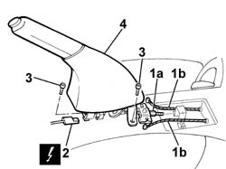

3380A10 handbrake lever - r+r
- Path
- Procedures > 33 BRAKES > 3380 HANDBRAKE > 3380A handbrake control and linkage > 3380A10 handbrake lever - r+r
- Kind
- repair procedure (removal / refitting; the operation number is the code)
- Applies to
- all engines; all production periods
- Interactive page
- https://sloeber94.github.io/elrnDB-fDbl/en/#/2584700
Applies to: all engines; all production periods
 Removing
Removing
 Refitting
RefittingOp. 7040A60 UNDERDASHBOARD TRIM - R.R..
Op. 7065A14 ANCHORAGE ROD FOR , (ONE), FRONT SEAT BELT LEFT OR RIGHT - R.R..
Op. 7040L20 TUNNEL COVER - R.R..
1. Undo the adjustment nut (1a) after slackening the cable tension, then disconnect the cables (1b) from the mounting.
2. Disconnect the electrical connection for the handbrake.
Name | Connector | |
|---|---|---|
2 | Handbrake "on" switch |
3. Unscrew the handbrake lever retaining bolts.
4. Remove the handbrake lever.

Applies to: all engines; all production periods
Refitting
RemovingPositin the handbrake lever in the special housing and tighten the fixing bolts to torque.
 | Fastening | Component | Ø | Value (daNm) |
|---|---|---|---|---|
- | Bolt | HANDBRAKE LEVER | M8 | 2.4 |
Connect the electrical connection for the handbrake.
 | Name | Connector |
|---|---|---|
- | Handbrake "on" switch |
Fit the control cables to the lever.
Op. 3380A04 HANDBRAKE - ADJUST TRAVEL.
Op. 7040L20 TUNNEL COVER - R.R..
Op. 7065A14 ANCHORAGE ROD FOR , (ONE), FRONT SEAT BELT LEFT OR RIGHT - R.R..
Topics linked from this page (5)
- 3380A04 handbrake - check travel
- 7040A60 under facia trim - r+r
- 7040L20 tunnel trim - r r
- 7065A14 ANCHORAGE ROD for , (one), front seat belt left or right - R.R.
- I40 HANDBRAKE "ON" SWITCH ( REAR )